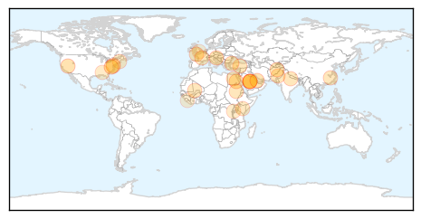

Unknown
30-Day Web Trend
5 alerts, 5 warnings

30-Day Twitter Trend
1 alerts, 0 warnings

Article Locations

Article Confidences

Top Articles:
- 0.994
- First MERS infections detected in Algeria
- 0.993
- First MERS infections detected in Algeria
- 0.991
- First MERS infections detected in Algeria
- 0.972
- Local Health Officials On Watch For MERS
- 0.934
- Health minister heads to Aswan after malaria cases increase to 14
- 0.917
- Chicago Tribune
- 0.917
- Chicago Tribune
- 0.866
- Freed U.S. soldier on way to military hospital in Germany -official
- 0.866
- Taliban detainees released in Bergdahl deal en route to Qatar
- 0.866
- Turkish police fire teargas against protesters on anniversary of mass demos
- 0.802
- Second bovine TB outbreak confirmed in Cumbria
- 0.794
- Police teargas activists marking Taksim anniversary
- 0.794
- China's territorial claims a ‘destabilising' force, US says
- 0.794
- Taliban frees US soldier in exchange for Guantanamo detainees
- 0.794
- Sudan 'to release' woman sentenced to die for apostasy
- 0.794
- Spain breaks up suspected jihadist cell in Melilla
- 0.794
- Obama to meet Ukraine’s president-elect Poroshenko
- 0.794
- French media in hot seat over 'helping' far right to victory
- 0.794
- Indian teens 'raped, then hung', district police chief says
- 0.794
- Eight indicted in China over Tiananmen suicide attack
- 0.794
- Defeated candidate Sabahi contests Egypt election results
- 0.720
- Kenya turns to two-dose ‘Rotarix’ to combat killer diarrhoea virus
- 0.710
- Rabid Bobcat in Found in Littleton Prompts Call for Animal Vaccinations
- 0.647
- UAB Hospital moves to next stage to eradicate Legionnaires's disease bacteria
- 0.619
- Rwf600 billion needed to eradicate malaria and TB
- 0.536
- How pure is Safe Drinking Water in Rural Area « Awoko Newspaper
- 0.519
- New Doctors On Staff At Bluewater Health
- 0.514
- Ibrutinib (IMBRUVICA) RESONATE' Data Show Significant Improvements in Progression-Free Survival and Overall Survival in Patients with Relapsed/Refractory Chronic Lymphocytic Leukemia or Small Lymphocy
Top Tweets:
-
No tweets found for May 31, 2014